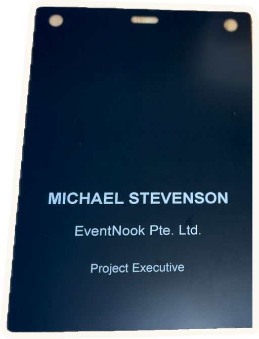
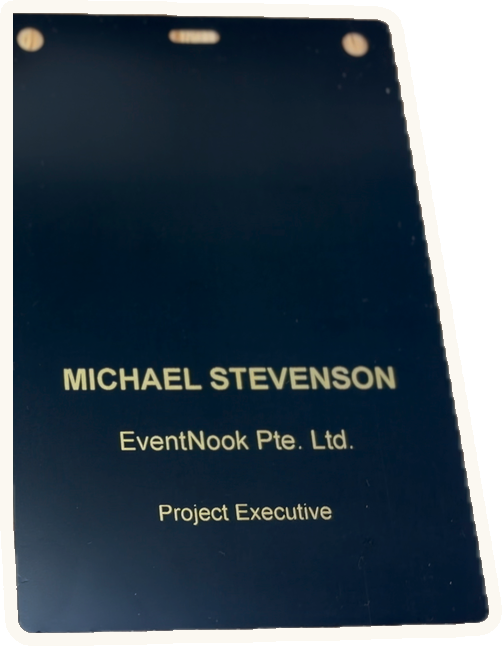

<!doctype html>
<html lang="en">
<head>
<meta charset="utf-8">
<meta name="viewport" content="width=device-width, initial-scale=1, viewport-fit=cover">
<title>Spot the Speakers</title>
<link rel="icon" href="data:,">
<link rel="stylesheet" href="https://fonts.googleapis.com/css2?family=Special+Elite&family=Inter:wght@500;600;700;800&display=swap">
<link rel="stylesheet" href="../common.css">
<style>
/* Mini game D · "Spot the Speakers": find the five speakers in a crowd. With black-only text every badge looks the same;
   printed in white (speakers) and gold (VIPs), they stand out at a glance. Then the speaker's badge goes into a scrapbook. */
#crowd{position:absolute;inset:0;z-index:10}
#crowd .pup,#crowd .pup svg{pointer-events:none}
#crowd .pup svg *{pointer-events:auto;cursor:pointer}
#marks{position:absolute;left:0;top:0;width:1920px;height:1080px;z-index:28;pointer-events:none;overflow:visible}
.x{position:absolute;left:0;top:0;z-index:32;color:var(--red);font:900 64px 'Archivo Black';pointer-events:none}
.lbl{position:absolute;left:0;top:0;z-index:33;background:var(--strip);font:20px 'Special Elite';padding:6px 12px 4px;box-shadow:0 4px 6px rgba(40,28,10,.2);pointer-events:none;white-space:nowrap}
#book{position:absolute;left:0;top:0;width:1040px;height:720px;z-index:42;background:#FBF6EA;box-shadow:0 0 0 8px #fff,0 26px 40px rgba(40,28,10,.35);
  background-image:radial-gradient(rgba(60,50,35,.18) 1.4px,transparent 1.6px);background-size:28px 28px}
#book .note{position:absolute;font:34px/1.25 'Special Elite';color:#3a3226}
#book .stub{position:absolute;width:250px;height:120px;background:#E9A923;box-shadow:0 6px 10px rgba(40,28,10,.2);font:400 26px/1.1 'Archivo Black';padding:22px 24px;box-sizing:border-box;
  -webkit-mask:radial-gradient(circle 12px at 0 50%,transparent 98%,#000) left/51% 100% no-repeat,radial-gradient(circle 12px at 100% 50%,transparent 98%,#000) right/51% 100% no-repeat}
.hint .ht{font:32px/1.35 'Special Elite';margin-top:18px}.hint .ht b{font:400 34px 'Archivo Black'}
.hint .hk{font:400 26px 'Archivo Black';margin-top:10px}
.port #marks{width:800px}
.port .watch{width:116px;height:116px;font-size:46px}
.port .key{font-size:24px;gap:14px;padding:10px 14px}.port .key i{font-size:22px}
.port .hint .hb{flex-direction:column;gap:14px}.port .hint .hb2{gap:22px}.port .hint .hk{font-size:24px}.port .hint .ht{font-size:31px;margin-top:14px}
.port .lbl{font-size:24px}
.port #book .note{font-size:30px}
/* upright: each round's card is a short animated demo (a hand taps the right badge) instead of sentences */
.demo{position:relative;height:400px;margin:4px -10px 0;pointer-events:none}
.demo .pup{filter:none}
.tut{position:absolute;left:0;top:0;z-index:5;font:84px/1 serif}
.tmk{position:absolute;left:0;top:0;z-index:4;width:150px;height:200px;margin:-100px 0 0 -75px;border:7px solid #E9A923;border-radius:50%;box-sizing:border-box}
.tmk.no{border:0;width:auto;height:auto;margin:-50px 0 0 -26px;color:var(--red);font:900 96px/1 'Archivo Black'}
.demo-l{font:400 38px/1.2 'Archivo Black';margin-top:10px}.demo-l .tm{display:inline-block;font:28px 'Special Elite';background:var(--strip);padding:4px 12px;border-radius:8px;margin-left:8px;vertical-align:4px}
.turned .pup,.port .pup{will-change:transform}   /* on a phone (turned or upright): the swaying crowd moves as layers instead of repainting (WebKit: 126 -> 43 ms CPU/s) */
.sw{display:inline-block;font-family:'Archivo Black';font-weight:400;background:#15171D;color:#F5F5F2;padding:1px 12px 5px;border-radius:8px;line-height:1.1}.sw.gold{color:#E3BF63}
.key{position:absolute;left:0;top:0;z-index:31;display:flex;gap:18px;background:var(--strip);padding:10px 16px;box-shadow:0 6px 10px rgba(40,28,10,.18);font:22px 'Special Elite'}
.key span{display:flex;align-items:center;gap:8px}.key i{font:800 18px Inter;font-style:normal;padding:4px 8px;border-radius:5px}
#real{position:absolute;left:0;top:0;width:330px;z-index:43;filter:drop-shadow(0 14px 14px rgba(40,28,10,.35))}
</style>
</head>
<body>
<div id="stage">
  <div class="bg"></div>
  <div class="news" style="left:1240px;top:150px;width:560px;height:260px;transform:rotate(3deg)"></div>
  <div class="news" style="left:60px;top:170px;width:460px;height:230px;transform:rotate(-3deg)"></div>
  <div id="crowd"></div>
  <svg id="marks" viewBox="0 0 1920 1080"></svg>
  <div class="grain"></div><div class="vig"></div>
</div>
<script src="../common.js"></script>
<script>
const { $, place, tween, wait, strip, unstrip, stamp, wipe, button, sfx } = G;
const crowd = document.getElementById('crowd'), marks = document.getElementById('marks');
if (G.PORT) {                                                     // upright phone: the stage stands up; decor and the marks layer follow
  marks.setAttribute('viewBox', `0 0 800 ${G.H}`); marks.style.height = G.H + 'px';
  const nw = document.querySelectorAll('.news'); [[430, 150, 340, 150, 3], [20, 200, 300, 130, -3]].forEach(([l, t, w, h, r], i) => Object.assign(nw[i].style, { left: l + 'px', top: t + 'px', width: w + 'px', height: h + 'px', transform: `rotate(${r}deg)` }));
}
const ROUND = 10;
// two rows of big people (the back row stands in the gaps of the front row), so every badge can be read
const SLOTS = [];
if (!G.PORT) {
  [260, 540, 820, 1100, 1380, 1660].forEach(x => SLOTS.push({ x, y: 800, s: .86 }));
  [120, 400, 680, 960, 1240, 1520, 1800].forEach(x => SLOTS.push({ x, y: 1080, s: 1.04 }));
} else {
  // upright: five staggered rows (2, 3, 2, 3, 2) of people holding big badges (BADGE x), so the names read on a phone. Sized
  // from the screen's height: rows two apart never hide a badge (d >= 189 s); the front row keeps clear of NookPass's QR button
  // the big badge hangs from the shoulders to the feet (person y 176-416): rows two apart need d >= 208 s
  const TOP = 270, sc = Math.min(.85, (G.H - 22 - TOP) / 1252), d = (G.H - 22 - TOP - 420 * sc) / 4;
  [[275, 525], [150, 400, 650], [275, 525], [150, 400, 650], [275, 525]].forEach((row, r) => row.forEach(x => SLOTS.push({ x, y: Math.round(TOP + 420 * sc + d * r), s: +sc.toFixed(3) })));
}
const BADGE = G.P(1, 2), BADGE_Y = G.P(262, 300);                // upright: the badge is drawn twice as big, lower on the body (face clear)
// where the round's pieces sit: [x, y] landscape / upright
const AT = { strip: G.P([90, 40], [24, 20]), hud: G.P([1430, 40], [24, 150]), watch: G.P([1730, 22], [660, 128]), key: G.P([1130, 106], [24, 222]) };
const NAMES = ['PRIYA N.', 'AHMAD T.', 'SARAH L.', 'WEI JIE K.', 'NURUL A.', 'BEN O.', 'GRACE T.', 'RAVI S.', 'MEI LING C.', 'DANIEL W.', 'AISHA R.', 'KENJI M.', 'HUI MIN L.'].slice(0, G.P(13, 12));   // upright: 12 (still 4 speakers)
const COS = ['Pixelwork Labs', 'Nexora', 'Brightwave', 'Harbour & Co', 'Kite Studio', 'Lumen Bank'];
const ROLE = i => [2, 5, 8, 11].includes(i) ? 'SPEAKER' : [0, 6, 10].includes(i) ? 'VIP' : 'DELEGATE';
const NSP = 4;                                                    // speakers to find
let key = null, RUN = 0, P = [], found = 0, wrong = 0, t0 = 0, lastFound = null, over = false, endRound, watch, hud, sway = 0, stats = [];

// ---------- badges ----------
function badgeSVG(p, colour) {
  const kind = !colour ? 'plain' : p._role === 'SPEAKER' ? 'white' : p._role === 'VIP' ? 'gold' : 'plain';
  const bg = kind === 'plain' ? '#FFFFFF' : '#15171D', fg = kind === 'gold' ? '#E3BF63' : kind === 'white' ? '#F5F5F2' : '#1D1B18';
  return '<path d="M-14 -92 L-10 -58 M14 -92 L10 -58" stroke="#1d1d2b" fill="none" style="stroke-width:3"/>'
    + '<rect x="-46" y="-62" width="92" height="120" rx="7" fill="#fff"/>' + `<rect x="-43" y="-59" width="86" height="114" rx="5" fill="${bg}"/>`
    + `<rect x="-11" y="-53" width="22" height="5" rx="2.5" fill="${kind === 'plain' ? '#d9d2c2' : '#3a3d46'}"/>`
    + `<text x="0" y="-22" text-anchor="middle" font-family="Inter" font-weight="800" font-size="13" fill="${fg}">${p._name}</text>`
    + `<text x="0" y="2" text-anchor="middle" font-family="Inter" font-weight="800" font-size="14.5" letter-spacing=".5" fill="${fg}">${p._role}</text>`
    + `<text x="0" y="24" text-anchor="middle" font-family="Inter" font-weight="600" font-size="9.5" fill="${fg}" opacity=".85">${p._co}</text>`;
}
function dress(colour) { P.forEach(p => { const sl = p.querySelector('.slot'); sl.innerHTML = badgeSVG(p, colour); if (BADGE !== 1) { sl.setAttribute('transform', `translate(100 ${BADGE_Y}) scale(${BADGE})`); sl.firstElementChild.style.display = 'none'; /* no lanyard over the face */ } }); }

// ---------- the crowd ----------
function build() {
  crowd.innerHTML = ''; P = [];
  NAMES.forEach((n, i) => {
    const p = G.person({ ...G.look(i + 21), s: 1 }, crowd);
    p._name = n; p._role = ROLE(i); p._co = COS[i % COS.length]; p._ph = i * 1.7; P.push(p);
    p.addEventListener("pointerdown", e => hit(p, e));
  });
}
function arrange(order) {
  order.forEach((pi, k) => { const p = P[pi], sl = SLOTS[k]; p._sl = sl; p.style.zIndex = Math.round(sl.y); G.at(p, sl.x, sl.y, 0, sl.s); });
}
function shuffled() { const a = P.map((_, i) => i); for (let i = a.length - 1; i > 0; i--) { const j = Math.floor(Math.random() * (i + 1)); [a[i], a[j]] = [a[j], a[i]]; } return a; }
function startSway() {
  const run = RUN; let last = 0;
  const tick = now => {
    if (run !== RUN || !sway) return;
    if (now - last > 66) { last = now; const t = now / 1000; P.forEach(p => { const sl = p._sl; if (sl) G.at(p, sl.x + Math.sin(t * .8 + p._ph) * 2, sl.y - Math.abs(Math.sin(t * 1.4 + p._ph)) * 2, Math.sin(t * 1.1 + p._ph) * .7, sl.s); }); }
    requestAnimationFrame(tick);
  };
  sway = 1; requestAnimationFrame(tick);
}
function ring(p, color, dashed) {     // a marker circle around a person, drawn on
  const sl = p._sl, cx = sl.x, cy = sl.y - 205 * sl.s, rx = 78 * sl.s + 14, ry = 222 * sl.s;
  const e = document.createElementNS('http://www.w3.org/2000/svg', 'ellipse');
  Object.entries({ cx, cy, rx, ry, fill: 'none', stroke: color, 'stroke-width': 8, 'stroke-linecap': 'round', transform: `rotate(${(G.rnd() - .5) * 10} ${cx} ${cy})` }).forEach(([k, v]) => e.setAttribute(k, v));
  marks.appendChild(e); const L = e.getTotalLength();
  if (dashed) e.setAttribute('stroke-dasharray', '18 14');
  else { e.style.strokeDasharray = L; e.style.strokeDashoffset = L; tween(.24, k => e.style.strokeDashoffset = L * (1 - k), 'out'); }
  return e;
}
function label(p, text, color) { const sl = p._sl, l = $(`<div class="lbl" style="color:${color}">${text}</div>`); place(l, sl.x - 52, sl.y - 440 * sl.s - 20, -4); return l; }

// ---------- tapping ----------
function hit(p, e) {
  if (over || p._found || !hud) return;
  if (p._role === 'SPEAKER') {
    p._found = true; found++; lastFound = p; G.ding(); sfx('pop', -10); G.mood(p, 'wow'); ring(p, '#E9A923');
    setHud(); if (found === NSP) { over = true; endRound(); }
  } else {
    wrong++; G.boing(); const pt = G.pt(e), x = $('<div class="x">✗</div>'); place(x, pt.x - 22, pt.y - 40, -8); setTimeout(() => x.remove(), 600);
    if (p._role === 'VIP' && stats.length) { const l = label(p, 'VIP', '#1D1B18'); setTimeout(() => l.remove(), 900); }
    G.mood(p, 'frown'); setTimeout(() => G.mood(p, null), 700);
  }
}
function setHud() { if (hud) hud.innerHTML = `Speakers found<b>${found} / ${NSP}</b>`; }

// ---------- what to look for (a card before each round) ----------
function exampleBadge(role, kind) {
  const bg = kind === 'plain' ? '#FFFFFF' : '#15171D', fg = kind === 'gold' ? '#E3BF63' : kind === 'white' ? '#F5F5F2' : '#1D1B18';
  return `<svg viewBox="-50 -66 100 128" style="width:230px;height:294px;filter:drop-shadow(0 8px 10px rgba(40,28,10,.25))"><rect x="-46" y="-62" width="92" height="120" rx="7" fill="#fff"/><rect x="-43" y="-59" width="86" height="114" rx="5" fill="${bg}" stroke="#d9d2c2" stroke-width="${kind === 'plain' ? 1 : 0}"/>
    <rect x="-11" y="-53" width="22" height="5" rx="2.5" fill="#d9d2c2"/><text x="0" y="-22" text-anchor="middle" font-family="Inter" font-weight="800" font-size="13" fill="${fg}">SARAH L.</text>
    <text x="0" y="2" text-anchor="middle" font-family="Inter" font-weight="800" font-size="14.5" letter-spacing=".5" fill="${fg}">${role}</text><text x="0" y="24" text-anchor="middle" font-family="Inter" font-weight="600" font-size="9.5" fill="${fg}">Brightwave</text>
    ${kind === 'plain' ? '<ellipse cx="0" cy="-3" rx="44" ry="16" fill="none" stroke="#E9A923" stroke-width="4"/>' : ''}</svg>`;
}
// a little looped demo: people with badges, a hand taps the right one (gold ring) and the wrong ones (red cross)
function demo(box, colour) {
  const who = colour ? [['RAVI S.', 'DELEGATE'], ['SARAH L.', 'SPEAKER'], ['GRACE T.', 'VIP']] : [['SARAH L.', 'SPEAKER'], ['RAVI S.', 'DELEGATE']];
  const xs = colour ? [130, 352, 574] : [220, 484], S = .8, FEET = 392;
  const ppl = who.map(([n, r], i) => {
    const p = G.person({ ...G.look([7, 2, 6][i] + 21), s: S }, box); p._name = n; p._role = r; p._co = COS[i];
    const sl = p.querySelector('.slot'); sl.innerHTML = badgeSVG(p, colour); sl.setAttribute('transform', `translate(100 300) scale(2)`); sl.firstElementChild.style.display = 'none';
    G.at(p, xs[i], FEET, 0, S); return { p, x: xs[i], y: FEET - 96, good: r === 'SPEAKER' };
  });
  const hand = $('<div class="tut">👆</div>', box); let alive = true, hx = 680, hy = 380; place(hand, hx, hy);
  const order = colour ? [ppl[1], ppl[2], ppl[0]] : [ppl[0], ppl[1]];
  (async () => {
    while (alive) for (const t of order) {
      if (!alive) return;
      const x0 = hx, y0 = hy; hx = t.x - 22; hy = t.y + 20;
      await tween(.45, e => place(hand, x0 + (hx - x0) * e, y0 + (hy - y0) * e), 'inout'); if (!alive) return;
      await tween(.16, e => place(hand, hx, hy, 0, 1 - .15 * Math.sin(e * Math.PI))); if (!alive) return;
      const m = $(t.good ? '<div class="tmk"></div>' : '<div class="tmk no">✗</div>', box); place(m, t.x, t.y - 20); if (t.good) G.mood(t.p, 'wow'); else G.mood(t.p, 'frown');
      await wait(750); m.remove(); G.mood(t.p, null);
    }
  })();
  return () => { alive = false; };
}
function hint(colour) {
  return new Promise(res => {
    const dim = $('<div data-dim style="position:absolute;inset:0;background:rgba(231,221,198,.75);z-index:41"></div>');
    const body = colour
      ? `<div class="hb2" style="display:flex;gap:36px;align-items:flex-end;justify-content:center">
          <div style="text-align:center"><div class="hk">SPEAKER = <span class="sw">white text</span></div></div>
          <div style="text-align:center"><div class="hk">VIP = <span class="sw gold">gold text</span></div></div></div>
          <div class="ht">Speakers now wear <b>black badges</b> with <span class="sw">white text</span>.<br>Tap those. Skip the white badges and the <span class="sw gold">gold text</span> VIPs.</div>`
      : `<div class="hb" style="display:flex;gap:44px;align-items:center;justify-content:center">${exampleBadge('SPEAKER', 'plain')}
          <div class="ht" style="text-align:left;margin:0">Find the <b>${NSP} speakers</b>.<br>Their badge says <b>SPEAKER</b>.<br>You have 10 seconds.</div></div>`;
    const demoBody = colour
      ? `<div class="demo"></div><div class="demo-l">Tap <span class="sw">white text</span> <span class="tm">⏱ 10 s</span></div>`
      : `<div class="demo"></div><div class="demo-l">Tap the ${NSP} SPEAKERS <span class="tm">⏱ 10 s</span></div>`;
    const c = $(`<div class="card hint" style="left:${G.P(410, 20)}px;top:${G.P(120, 120)}px;width:${G.P(1100, 760)}px;padding:${G.P('34px 40px 30px', '26px 28px 24px')};box-sizing:border-box;text-align:center">
      <div style="font:500 22px 'Special Elite';letter-spacing:.2em;color:#8a7a5a">${colour ? 'ROUND 2 · GOLD &amp; WHITE TEXT' : 'ROUND 1 · BLACK TEXT ONLY'}</div>${G.PORT ? demoBody : body}</div>`);
    const stopDemo = G.PORT ? demo(c.querySelector('.demo'), colour) : () => {};
    sfx('paper', -10); tween(.3, e => place(c, 0, 500 * (1 - e), -.5));
    IDLE.arm();
    const b = button('Start ▸', 860, 120 + 34 + (colour ? 560 : 420), () => { stopDemo(); IDLE.disarm(); dim.remove(); c.remove(); b.remove(); res(); }, true);
    if (G.PORT) { const h = c.offsetHeight, top = Math.max(110, Math.round((G.H - h - 150) / 2)); c.style.top = top + 'px'; place(b, G.cx(b), top + h + 40); }   // upright: centred, Start under it
    b.style.zIndex = 46;
  });
}

// ---------- a round ----------
async function round(colour) {
  const run = RUN; found = 0; wrong = 0; over = false; lastFound = null; marks.innerHTML = '';
  P.forEach(p => { p._found = false; G.mood(p, null); });
  dress(colour); arrange(shuffled()); startSway();
  await hint(colour); if (run !== RUN) return;
  const s = await strip(colour ? G.P('Tap the speakers: black badges, white text!', 'Tap the white text!') : G.P(`Find the ${NSP} speakers. Tap them!`, `Tap the ${NSP} speakers!`), AT.strip[0], AT.strip[1], { rot: -1 });
  if (run !== RUN) return;
  hud = $('<div class="hud"></div>'); place(hud, AT.hud[0], AT.hud[1], -1); setHud();
  if (colour) { key = $(`<div class="key"><span><i style="background:#15171D;color:#F5F5F2">white text</i>= Speaker</span><span><i style="background:#15171D;color:#E3BF63">gold text</i>= VIP</span></div>`); place(key, AT.key[0], AT.key[1], 1); }
  const done = new Promise(r => endRound = r);
  t0 = performance.now(); watch = G.watch(ROUND, AT.watch[0], AT.watch[1], () => { over = true; endRound(); });
  IDLE.arm();
  await done; if (run !== RUN) return;
  const time = (performance.now() - t0) / 1000; watch.stop(); IDLE.disarm(); if (key) { key.remove(); key = null; }
  stats.push({ found, wrong, time: found === NSP ? time.toFixed(1) + ' s' : 'over 10 s', secs: found === NSP ? +time.toFixed(1) : ROUND });
  await unstrip(s); return run;
}
async function play() {
  stats = [];
  let run = await round(false); if (run !== RUN) return;
  // show the ones that were missed
  const missed = P.filter(p => p._role === 'SPEAKER' && !p._found), tags = [];
  missed.forEach((p, i) => setTimeout(() => { ring(p, '#C8321E', true); tags.push(label(p, 'missed', '#C8321E')); sfx('pop', -18); }, i * 160));
  const s = await strip(found === NSP ? `All ${NSP}! It took ${stats[0].time}.` : G.P(`You found ${found} of ${NSP}. Every badge looks the same.`, `${found} of ${NSP}. They all look alike.`), AT.strip[0], AT.strip[1], { rot: .6 });
  await wait(2200); if (run !== RUN) return;
  await wipe(async () => { s.remove(); tags.forEach(t => t.remove()); watch.el.remove(); hud.remove(); hud = null; marks.innerHTML = ''; });
  run = await round(true); if (run !== RUN) return;
  watch.el.remove(); hud.remove(); hud = null;
  await keepsake(run);
}
async function keepsake(run) {
  sway = 0;
  const p = lastFound || P.find(q => q._role === 'SPEAKER'), sl = p._sl;
  const s = await strip(stats[1].found === NSP ? `All ${NSP} in ${stats[1].time}. They stand out.` : G.P(`${stats[1].found} of ${NSP}. White on black is hard to miss.`, `${stats[1].found} of ${NSP}. White text stands out.`), AT.strip[0], AT.strip[1], { rot: -.6 });
  await wait(1400); if (run !== RUN) return;
  const dim = $('<div data-dim style="position:absolute;inset:0;background:rgba(231,221,198,.8);z-index:41"></div>'); dim.style.opacity = 0;
  tween(.3, e => dim.style.opacity = e);
  s.style.zIndex = 46;
  const book = G.PORT ? $(`<div id="book" style="width:760px;height:640px"><div class="note" style="left:40px;top:430px;transform:rotate(-2deg)">too nice to throw away</div>
    <div class="stub" style="left:480px;top:470px;transform:rotate(5deg)">ADMIT ONE</div>
    <div class="note" style="left:40px;top:520px;font-size:28px;transform:rotate(-2deg)">white on black ✦ gold on black</div>
    
    <i class="tape" style="left:26px;top:56px;transform:rotate(-34deg)"></i></div>`) : $(`<div id="book"><div class="note" style="left:720px;top:110px;transform:rotate(-3deg)">too nice<br>to throw away</div>
    <div class="stub" style="left:730px;top:300px;transform:rotate(5deg)">ADMIT ONE</div>
    <div class="note" style="left:720px;top:480px;font-size:28px;transform:rotate(-2deg)">white on black ✦<br>gold on black</div>
    
    <i class="tape" style="left:40px;top:84px;transform:rotate(-34deg)"></i><i class="tape" style="left:250px;top:560px;transform:rotate(-20deg)"></i></div>`);
  const BK = G.P({ x: 440, y: 180, y0: 1200 }, { x: 20, y: Math.max(150, Math.round((G.H - 640) / 2) - 60), y0: G.H + 100 }), dx = BK.x - 440, dy = BK.y - 180;   // upright: the scrapbook sits mid-screen
  place(book, BK.x, BK.y0, -2); sfx('paper', -8);
  await tween(.36, e => place(book, BK.x, BK.y0 - (BK.y0 - BK.y) * e, -2), 'out');
  // the badge leaves the speaker and becomes the real thing: white text on a black badge
  const real = $('');
  const bx = sl.x - 165, by = sl.y - (420 - BADGE_Y) * sl.s - 213;
  place(real, bx, by, 0, .2); sfx('whoosh-short', -12);
  const RL = G.P({ x: 780 + dx, y: 250 + dy, k: 1 }, { x: BK.x + 410 - 165, y: BK.y + 220 - 213, k: .74 });   // where the real badge lands (upright: smaller, beside the gold one)
  await tween(.5, e => place(real, bx + (RL.x - bx) * e, by + (RL.y - by) * e - Math.sin(e * Math.PI) * 120, 5 * e, .2 + (RL.k - .2) * e), 'inout');
  sfx('sparkle', -8);
  const tapes = G.P([[1030 + dx, 250 + dy, 34], [790 + dx, 640 + dy, -24]], [[BK.x + 480, BK.y + 70, 34], [BK.x + 300, BK.y + 360, -24]]).map(([x, y, r]) => { const t = $('<i class="tape" style="z-index:44"></i>'); place(t, x, y, r); sfx('paper', -14); return t; });
  await stamp('WORTH KEEPING', G.P(1060, 130), G.P(800, BK.y + 660), 'var(--mustard)', -7, 45);
  await wait(2600); if (run !== RUN) return;
  await unstrip(s);
  [book, real, dim, ...tapes].forEach(e => e.remove()); document.querySelectorAll('.stamp').forEach(e => e.remove());
  finish();
}
async function finish() {
  const [a, b] = stats;
  await G.result({ kicker: 'SPOT THE SPEAKERS · YOUR RESULT', heads: ['Black text only', 'Gold & white text'],
    rows: [['Speakers found', `${a.found} / ${NSP}`, `${b.found} / ${NSP}`], ['Time to find all four', a.time, b.time], ['Wrong taps', a.wrong, b.wrong]],
    stamp: 'STANDS OUT', game: 'D', again: start, back: start,
    lb: { title: 'sharpest eyes', score: a.found * 1000 - Math.round(b.secs * 10), label: `${a.found}/${NSP} · ${b.secs.toFixed(1)} s`, higher: true } });
  IDLE.arm();
}
const IDLE = G.idle(20000, () => start());
function start() {
  RUN++; sway = 0; IDLE.disarm(); if (watch) watch.stop(); hud = null; over = true;
  G.stage.querySelectorAll('.strip,.stamp,.btn,.card,.hud,.watch,.x,.lbl,.key,#book,#real,.tape,[data-dim]').forEach(e => e.remove());
  marks.innerHTML = ''; build(); dress(false); arrange(P.map((_, i) => i));
  G.titleCard('MINI GAME D · GOLD &amp; WHITE TEXT', 'Spot the Speakers', G.P('Four speakers are in this crowd.<br>Can you find them in 10 seconds?', 'Find 4 speakers in 10 seconds.'), () => play());
}
start();
</script>
</body>
</html>
